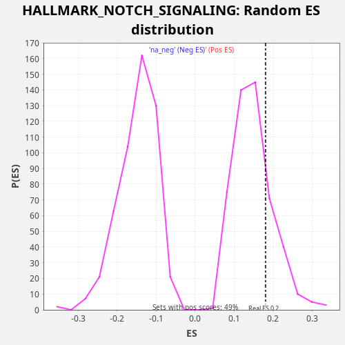

Profile of the Running ES Score & Positions of GeneSet Members on the Rank Ordered List
The same image in compressed SVG format
| Dataset | TCGA |
| Phenotype | NoPhenotypeAvailable |
| Upregulated in class | na_pos |
| GeneSet | HALLMARK_NOTCH_SIGNALING |
| Enrichment Score (ES) | 0.18096256 |
| Normalized Enrichment Score (NES) | 1.2161957 |
| Nominal p-value | 0.21020408 |
| FDR q-value | 0.31951138 |
| FWER p-Value | 0.997 |
| SYMBOL | RANK IN GENE LIST | RANK METRIC SCORE | RUNNING ES | CORE ENRICHMENT | |
|---|---|---|---|---|---|
| 1 | WNT5A | 510 | 2.623 | 0.0041 | Yes |
| 2 | NOTCH3 | 679 | 1.997 | 0.0264 | Yes |
| 3 | CCND1 | 793 | 1.715 | 0.0516 | Yes |
| 4 | KAT2A | 972 | 1.408 | 0.0734 | Yes |
| 5 | SKP1 | 1011 | 1.334 | 0.1026 | Yes |
| 6 | HES1 | 1096 | 1.223 | 0.1294 | Yes |
| 7 | RBX1 | 1477 | 0.830 | 0.1404 | Yes |
| 8 | DTX4 | 1494 | 0.817 | 0.1708 | Yes |
| 9 | LFNG | 1892 | 0.585 | 0.1810 | Yes |
| 10 | PPARD | 3452 | 0.164 | 0.1292 | No |
| 11 | FBXW11 | 3602 | 0.143 | 0.1525 | No |
| 12 | NOTCH1 | 3884 | 0.114 | 0.1688 | No |
| 13 | PSENEN | 5023 | 0.037 | 0.1395 | No |
| 14 | PRKCA | 5228 | 0.029 | 0.1599 | No |
| 15 | PSEN2 | 5675 | 0.016 | 0.1674 | No |
| 16 | TCF7L2 | 8358 | -0.004 | 0.0559 | No |
| 17 | DTX2 | 9168 | -0.016 | 0.0441 | No |
| 18 | CUL1 | 9669 | -0.028 | 0.0487 | No |
| 19 | SAP30 | 11084 | -0.097 | 0.0047 | No |
| 20 | FZD5 | 11557 | -0.134 | 0.0108 | No |
| 21 | APH1A | 12034 | -0.185 | 0.0167 | No |
| 22 | JAG1 | 12203 | -0.206 | 0.0390 | No |
| 23 | DLL1 | 14291 | -0.765 | -0.0408 | No |
| 24 | FZD1 | 15068 | -1.240 | -0.0509 | No |
| 25 | FZD7 | 15230 | -1.355 | -0.0282 | No |
| 26 | HEYL | 15805 | -1.980 | -0.0275 | No |
| 27 | NOTCH2 | 16906 | -4.084 | -0.0548 | No |
| 28 | MAML2 | 17108 | -4.708 | -0.0342 | No |
| 29 | ARRB1 | 17877 | -8.265 | -0.0439 | No |
| 30 | WNT2 | 17940 | -8.729 | -0.0159 | No |
| 31 | ST3GAL6 | 18363 | -13.285 | -0.0071 | No |
| 32 | DTX1 | 18431 | -14.200 | 0.0205 | No |

{kind=link}
{kind=link}